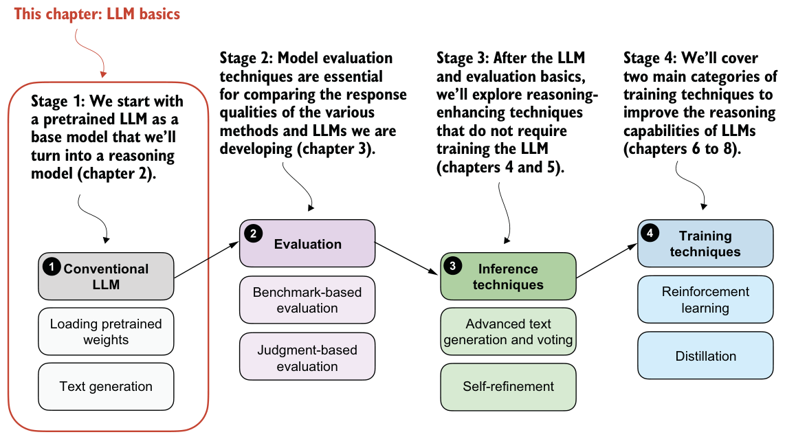
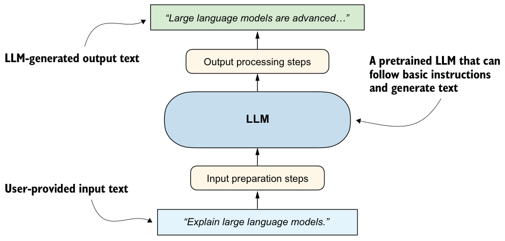

Generating text with a pretrained LLM
This chapter covers
- Setting up the code environment for working with LLMs
- Using a tokenizer to prepare input text for an LLM
- The step-by-step process of generating text with a pretrained LLM
- Caching and compilation techniques for speeding up LLM text generation
In the previous chapter, we discussed the difference between conventional large language models (LLMs) and reasoning models. We also introduced several techniques that can improve the reasoning capabilities of LLMs. These techniques are usually applied on top of a conventional (base) LLM.
In this chapter, we’ll lay the groundwork for the upcoming chapters by loading a pretrained base model, as shown in figure 2.1. Previously, we discussed how reasoning methods are often added after the usual post-training stages. But starting from a base model makes it easier to see which capabilities come from the reasoning methods themselves. The conventional LLM in this chapter is a nonreasoning LLM, and more specifically, a pretrained base model rather than an instruction- or preference-tuned assistant.

In addition to setting up the coding environment and loading a pretrained LLM, you will learn how to use a tokenizer to prepare text input for the model. As shown in figure 2.1, you will also implement a text generation function, enabling practical use of the LLM to generate text. This functionality will be used and improved on in later chapters.
2.1Introducing LLMs for text generation
The LLM we’ll use in this chapter is a base model that has undergone only pretraining, but it will already be capable of generating coherent text and, in some cases, of following basic instructions. Figure 2.2 summarizes the components of an LLM text generation pipeline, and we’ll discuss and implement these steps in more detail later in this chapter.

If you have not coded an LLM or used LLMs programmatically before, this chapter will teach you how the text generation process works. We won’t go deep into the internals of an LLM, such as the attention mechanism and other architectural components; this is the topic of my other book, Build a Large Language Model (From Scratch). Understanding those internals is not required for this book; if you are curious, you can learn about them afterwards. This chapter will also be helpful if you have already read my other book, since it adds new material on speeding up inference and other practical optimizations.
Before we begin implementing the components shown in figure 2.2, including input preparation, loading the LLM, and generating text, we first need to set up our coding environment.